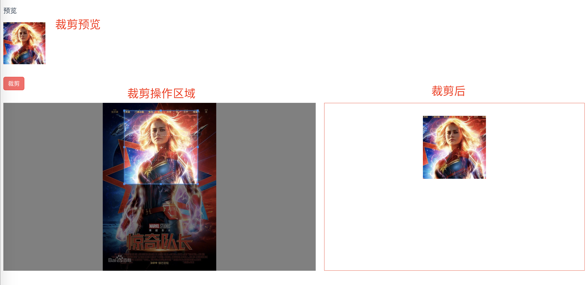
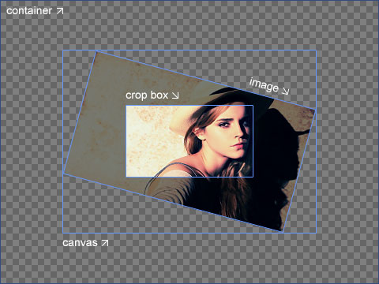

cropperjs是一款非常强大却又简单的图片裁剪工具，它可以进行非常灵活的配置，支持手机端使用，支持包括IE9以上的现代浏览器。（关键是使用方法简单，几行代码就可以搞定）
实践效果图
如图，可以对指定的图片进行裁剪，可以自己选择裁剪的交互方式，如大小、纵横比等 还可以预览裁剪区域，确认裁剪后可以生成一个包含裁剪图的canvas对象，借助canvas的toDataURL方法可以生成一张Base64格式的图片。还有另外一种不使用canvas的方式，利用该工具丰富的api可以拿到裁剪区域相对于原图的各项数据，使用这些数据进行css绝对定位即可展示裁剪后的图，该方式可以保证图片不失真和完整。

实践关键代码
用vue框架做了一个小demo，使用方法非常简单，关键就是要了解这个工具丰富的能力，并且知道何时使用它。
<template>
<div class="hello">
<p>预览</p>
<div class="before"></div>
<iy-button style="margin: 30px auto;" type="error" @click="sureSava">裁剪</iy-button>
<div class="container">
<div class="img-container">
<img src="../assets/test.jpg" ref="image" alt="">
</div>
<div class="afterCropper">
<img :src="afterImg" alt="">
</div>
</div>
</div>
</template>
<script>
import Cropper from 'cropperjs'
import 'cropperjs/dist/cropper.css'
export default {
name: 'HelloWorld',
data () {
return {
myCropper: null,
afterImg: ''
}
},
mounted() {
this.init()
},
methods: {
init(){
this.myCropper = new Cropper(this.$refs.image, {
viewMode: 1,
dragMode: 'none',
initialAspectRatio: 1,
aspectRatio: 1,
preview: '.before',
background: false,
autoCropArea: 0.6,
zoomOnWheel: false,
})
},
sureSava(){
this.afterImg = this.myCropper.getCroppedCanvas({
imageSmoothingQuality: 'high'
}).toDataURL('image/jpeg')
}
},
}
</script>
<!-- Add "scoped" attribute to limit CSS to this component only -->
<style scoped>
.container{
display: flex;
}
.before{
width: 100px;
height: 100px;
overflow: hidden;
/* 这个属性可以得到想要的效果 */
}
.img-container{
height: 400px;
overflow: hidden;
}
.afterCropper{
flex: 1;
margin-left: 20px;
border: 1px solid salmon;
text-align: center;
}
.afterCropper img{
width: 150px;
margin-top: 30px;
}
</style>自译文档
官方github文档：https://github.com/fengyuanchen/cropperjs
官方文档通俗易懂，我自己按照理解简单的翻译了一下，懒得翻译的可以参考一下，可能有不准确的地方，请自行判断，尤其是对容器（container）、图片容器（canvas）、图片（image）、裁剪区域（crop box）这几个概念的区分，有几个地方可能不对，先看这张图理解下：

下面是文档
# cropper - 裁剪图片 - IE9+
## 使用 cropperjs
```javascript
import Cropper from 'cropperjs'
import 'cropperjs/dist/cropper.css'
this.myCropper = new Cropper('被裁剪对象', '配置对象') //返回一个cropper对象
this.myCropper.getCroppedCanvas().toDataURL('image/jpeg') //拿到裁剪后的base64的图片
this.myCropper.getCropBoxData(); //获取裁剪框数据
this.myCropper.setCropBoxData(); //设置裁剪框数据
this.myCropper.getCanvasData(); //获取图片数据
this.myCropper.setCanvasData(); //设置图片数据
```
## 配置对象
> https://github.com/fengyuanchen/cropperjs
__注意：第一个值为默认值__
- viewMode 视图控制
- 0 无限制
- 1 限制裁剪框不能超出图片的范围
- 2 限制裁剪框不能超出图片的范围 且图片填充模式为 cover 最长边填充
- 3 限制裁剪框不能超出图片的范围 且图片填充模式为 contain 最短边填充
- dragMode 拖拽图片模式
- crop 形成新的裁剪框
- move 图片可移动
- none 什么也没有
- initialAspectRatio 裁剪框宽高比的初始值 默认与图片宽高比相同 只有在aspectRatio没有设置的情况下可用
- aspectRatio 设置裁剪框为固定的宽高比
- data 之前存储的裁剪后的数据 在初始化时会自动设置 只有在autoCrop设置为true时可用
- preview 预览 设置一个区域容器预览裁剪后的结果
- Element, Array (elements), NodeList or String (selector)
- responsive 在窗口尺寸调整后 进行响应式的重渲染 默认true
- restore 在窗口尺寸调整后 恢复被裁剪的区域 默认true
- checkCrossOrigin 检查图片是否跨域 默认true 如果是 会在被复制的图片元素上加上属性crossOrigin 并且在src上加上一个时间戳 避免重加载图片时因为浏览器缓存而加载错误
- checkOrientation 检查图片的方向信息（仅JPEG图片有）默认true 在旋转图片时会对图片方向值做一些处理 以解决IOS设备上的一些问题
- modal 是否显示图片和裁剪框之间的黑色蒙版 默认true
- guides 是否显示裁剪框的虚线 默认true
- center 是否显示裁剪框中间的 ‘+’ 指示器 默认true
- highlight 是否显示裁剪框上面的白色蒙版 （很淡）默认true
- background 是否在容器内显示网格状的背景 默认true
- autoCrop 允许初始化时自动的裁剪图片 配合 data 使用 默认true
- autoCropArea 设置裁剪区域占图片的大小 值为 0-1 默认 0.8 表示 80%的区域
- movable 是否可以移动图片 默认true
- rotatable 是否可以旋转图片 默认true
- scalable 是否可以缩放图片（可以改变长宽） 默认true
- zoomable 是否可以缩放图片（改变焦距） 默认true
- zoomOnTouch 是否可以通过拖拽触摸缩放图片 默认true
- zoomOnWheel 是否可以通过鼠标滚轮缩放图片 默认true
- wheelZoomRatio 设置鼠标滚轮缩放的灵敏度 默认 0.1
- cropBoxMovable 是否可以拖拽裁剪框 默认true
- cropBoxResizable 是否可以改变裁剪框的尺寸 默认true
- toggleDragModeOnDblclick 是否可以通过双击切换拖拽图片模式（move和crop）默认true 当拖拽图片模式为none时不可切换 该设置必须浏览器支持双击事件
- minContainerWidth（200）、minContainerHeight（100）、minCanvasWidth（0）、minCanvasHeight（0）、minCropBoxWidth（0）、minCropBoxHeight（0） 容器、图片、裁剪框的 最小宽高 括号内为默认值 注意 裁剪框的最小高宽是相对与页面而言的 并非相对图片
## 方法
__注意：如果方法没有被设置返回任何值，那么它会返回一个cropper的实例 因此多个方法可以使用链式写法__
- crop() 手动显示裁剪框
- reset() 重置图片和裁剪框为初始状态
- replace(url[, hasSameSize]) 替换图片路径并且重建裁剪框
- url 新路径
- hasSameSize 默认值false 设置为true表示新老图片尺寸一样 只需要更换路径无需重建裁剪框
- enable() 解冻 裁剪框
- disable() 冻结 裁剪框
- destroy() 摧毁裁剪框并且移除cropper实例
- move(offsetX[, offsetY]) 移动图片指定距离 一个参数代表横纵向移动距离一样
- moveTo(x[, y]) 移动图片到一个指定的点 一个参数代表横纵向移动距离一样
- zoom(ratio) 缩放 ratio大于零是放大 小于零缩小
- zoomTo(ratio[, pivot]) 缩放并设置中心点的位置
- rotate(degree) 旋转 类似css
- rotateTo(degree) 旋转到绝对角度
- scale(scaleX[, scaleY])、scaleX(scaleX)、scaleY(scaleY) 缩放 一个参数代表横纵向缩放值一样
- getData([rounded]) 返回裁剪区域基于原图片!原尺寸!的位置和尺寸 rounded默认为false 表示是否显示四舍五入后的数据 有了这些数据可以直接在原图上进行裁剪显示
- setData(data) 改变裁剪区域基于原图的位置和尺寸 仅当viewMode 不为0时有效
- getContainerData()、getImageData()、getCanvasData()、setCanvasData(data)、getCropBoxData()、setCropBoxData(data) 容器、图片容器（画布）、图片、裁剪区域相对容器的数据设置和获取
- getCroppedCanvas([options]) 得到被裁剪图片的一个canvas对象 options设置这个canvas的一些数据
- width、height、minWidth、minHeight、maxWidth、maxHeight、fillColor、imageSmoothingEnabled（图片是否是光滑的 默认true）、imageSmoothingQuality（图片的质量 默认low 还有medium、high）
- setAspectRatio(aspectRatio) 改变裁剪区域的宽高比
- setDragMode([mode]) 设置拖拽图片模式
## 事件
- ready 渲染前（图片已经被加载、cropper实例已经准备完毕）的准备工作事件
- cropstart、cropmove、cropend、crop 开始画裁剪框（或画布）、画裁剪框（或画布）的中途、裁剪框（或画布）画完、进行裁剪事件 event.detail.originalEvent、event.detail.action
- 当autoCrop为true crop事件会在ready之前触发
- zoom 裁剪框缩放事件参考资料
官方github地址：https://github.com/fengyuanchen/cropperjs